Explore Brasília
A Brief History
Brasília was inaugurated in 1960 as a planned federal capital designed by Lúcio Costa and Oscar Niemeyer on the central plateau. Monumental axes, cathedral curves, and residential superquadras record mid-twentieth-century modernist nation-building. Pilotis ministries and lake districts spread Niemeyer's curves across the cerrado capital's planned sectors.
Attractions Map
Top Sights & Activities
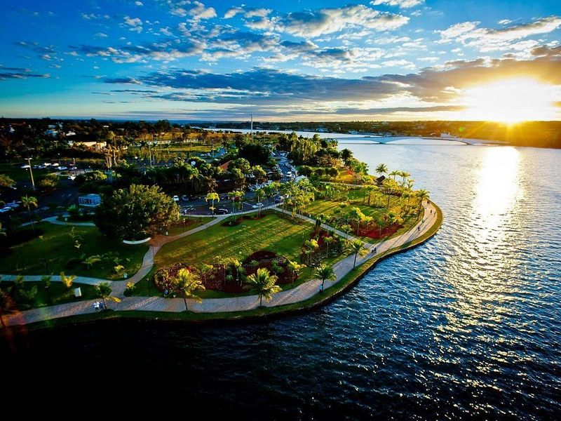
Pontão Lago Sul
Pontão Lago Sul is a popular hangout spot along Lake Paranoa in Brasilia, known for its palm-lined walking paths, cafes, and views of the JK Bridge. It's a favorite among locals and tourists alike, offering a variety of dining options such as Same Same, Gran Bier, Sallva, Manzua, Fausto e Manoel, Izzi Wine Garden, and the new addition Chard.
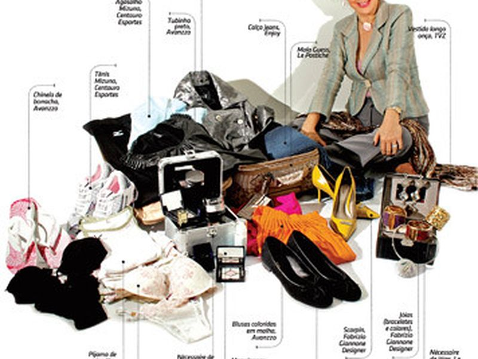
ParkShopping
ParkShopping is listed among principal sites for Brasília within Brazil. Municipal and regional heritage listings document its place in the historic centre and travellers routes through Brasília. ParkShopping is listed among principal sites for Brasília within Brazil.
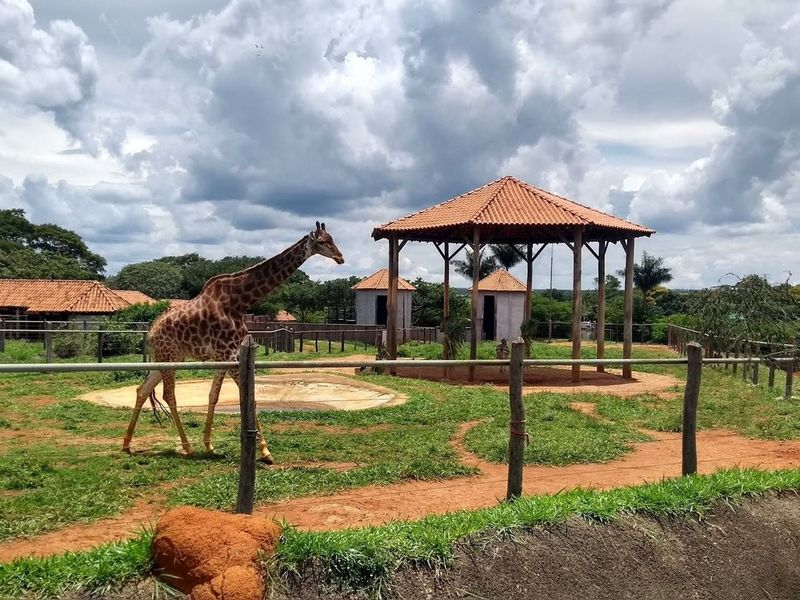
Zoológico de Brasília
Zoológico de Brasília, also known as Brasilia Zoo, has been open since 1957 and is home to over 800 animals from 185 different species. The zoo covers a vast area of 139.75 hectares and offers various attractions such as the Natural Sciences Museum, a Butterfly Zoo, picnic areas, camping grounds, playgrounds, artificial lakes, and snack bars. Visitors can enjoy observing a variety of birds, monkeys, capybaras roaming freely around the zoo.
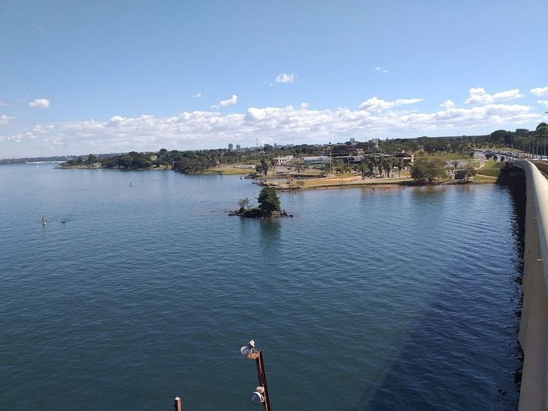
Juscelino Kubitschek Bridge
The Juscelino Kubitschek Bridge, also known as the President Bridge or JK Bridge, is a remarkable architectural feat located in Brasilia, Brazil. Spanning Lake Paranoa, this bridge features three intertwined arches that support the roadway and stand at over 60 meters in height. Designed by architect Alexandre Chan as part of a project to revitalize the area and improve traffic congestion, it has become an landmark in the city.
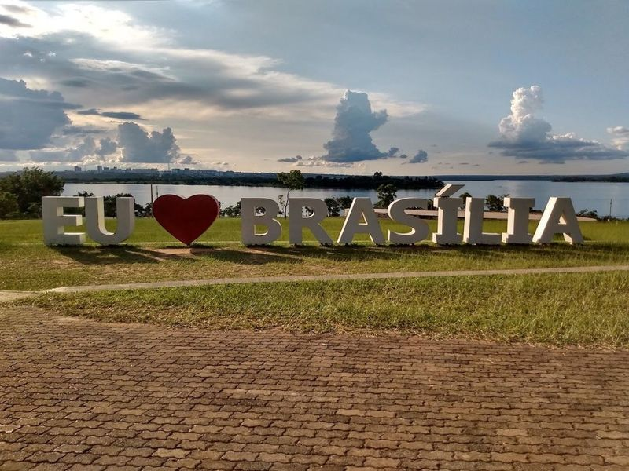
Don Bosco Chapel
Don Bosco Chapel, also known as Ermida Dom Bosco, is a small pyramid-shaped chapel made of white marble located in a park with views of Paranoa Lake. The serene atmosphere and the sounds of nature make it an ideal place for reflection and leisurely walks. Visitors can enjoy picnics, take in the beautiful landscape, and capture sunset photos by the lake.
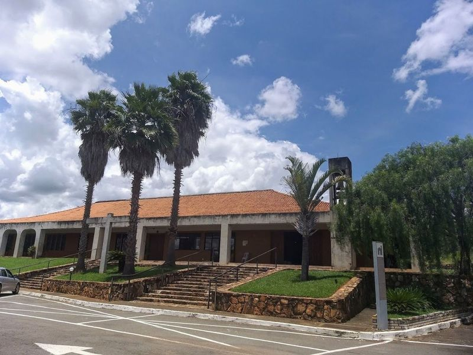
Mosteiro de São Bento de Brasília
Mosteiro de São Bento de Brasília is a serene complex located near Lake Paranoa, surrounded by native Cerrado forest. The area's rich fauna and flora provide an ideal setting for contemplation and meditation, with sunsets adding to the tranquil atmosphere. Visitors can attend Gregorian chant masses on Sundays and special Saint Benedict masses on the 11th of each month, where water, salt, and objects are blessed.
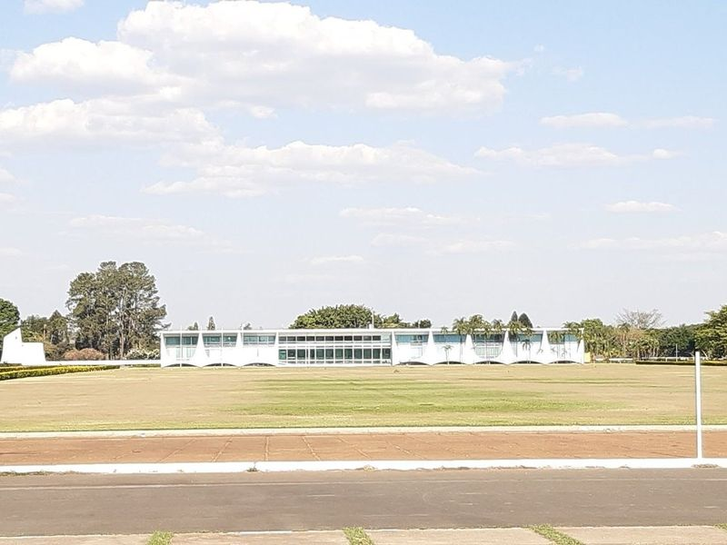
Palácio da Alvorada
The Alvorada Palace, designed by renowned architect Oscar Niemeyer in 1958, serves as the official residence of Brazilian Presidents. Situated by the Paranoa Lake and listed among National Historic Heritage Sites, it showcases contemporary Brazilian architecture and reflects the country's cultural and technical progress. The palace's striking design with dramatic curves and majestic white stone presents a utopian vision of the future.
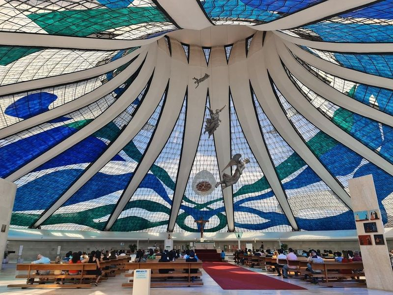
Catedral Metropolitana Nossa Senhora Aparecida
The Cathedral of Brasília, designed by Niemeyer in 1970, is a modern Roman Catholic church that stands as impressive structures in Brazil's capital city. Situated between the ministries and downtown rodoviaria, it commemorates the inauguration of Brasília with its unique design resembling an inverted chalice and crown of thorns. The sunken nave creates an unusual layout where most of the interior floor is below ground level.
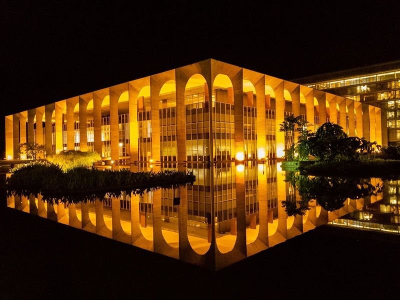
Palácio Itamaraty
Palácio Itamaraty, also known as the Ministry of External Relations, is a remarkable building designed by Oscar Niemeyer. Completed in 1970, it features a striking architecture with symmetrical arches that stand above a reflecting pool and landscaped gardens by Roberto Burle Marx. This futuristic ministry building is part of Niemeyer's works in Brasilia, along with other notable structures like Palácio do Planalto and Brasilia Cathedral.
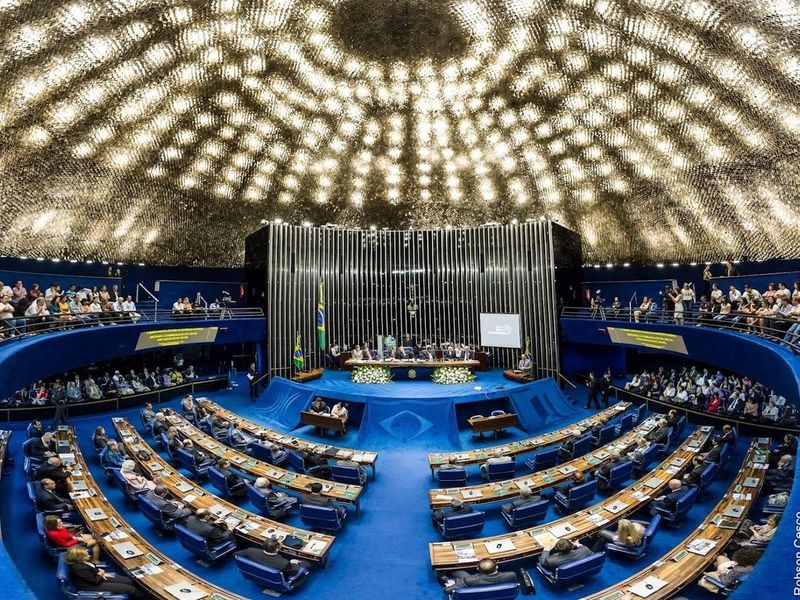
Congresso Nacional
The National Congress in Brasilia is a modern complex designed by the renowned architect Oscar Niemeyer. It houses Brazil's legislature and offers tours and exhibits for visitors. The building consists of a flat-based structure with two tall buildings, one for the Chamber of Deputies and the other for the Senate, featuring distinctive architectural elements.
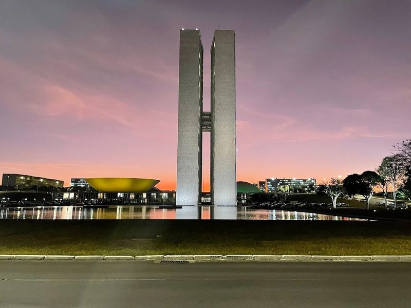
Praça dos Três Poderes
Three Powers Plaza, designed by Niemeyer and Costa, is a significant civic space in Brasilia. It features monumental public buildings along an east-west axis and serves as the focal point of the city's design. The square is adorned with striking sculptures and hosts various monuments, museums, and federal buildings. Named after the three branches of government it houses—the executive, legislative, and judicial—the plaza is home to the Presidential Palace, Congress, and Supreme Court.
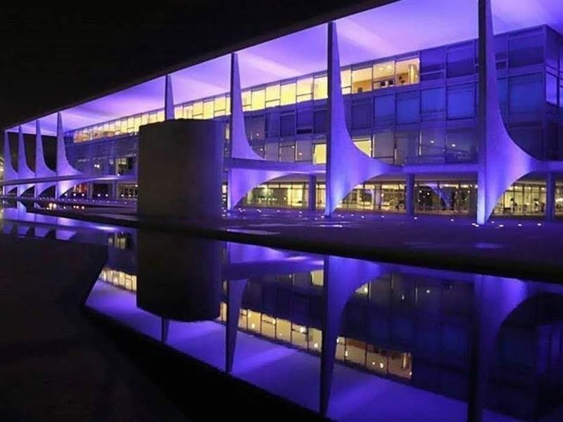
Palácio do Planalto
Palácio do Planalto, located in Brasilia, Brazil, is an elegant modernist building designed by Oscar Niemeyer and serves as the official workplace of the country's president. The structure dates back to 1958 and features stylish curved columns fronted by a large pool. Situated at Praca dos Tres Poderes (Three Powers Square), it is part of a complex that includes four additional buildings.
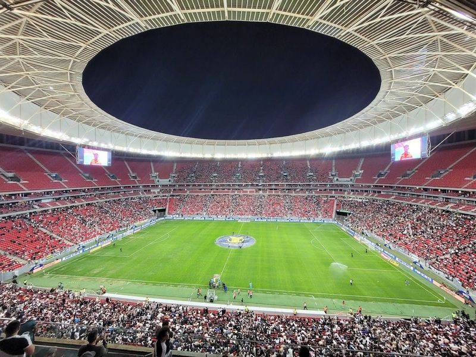
Estadio Nacional de Brasília Mané Garrincha
Arena BRB Mané Garrincha is a stadium that stands as a tribute to the legendary Brazilian footballer, Mané Garrincha. This expansive venue boasts modern and eco-friendly architecture, making it impressive sports complexes in Brazil. Not only does it host thrilling football matches, but it also serves as a concert space for both national and international artists.
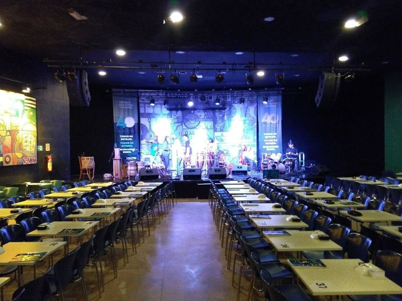
Brasília Choro Club
Brasília Choro Club is a spacious restaurant that offers live music by chorinho bands while serving appetizers and beverages. The atmosphere is relaxed and laid back, with seating at tables rather than theater style. The place hosts various themed nights featuring talented Brazilian singers and offers a nice evening out suitable for all ages in casual dress. On Saturdays, it's an excellent spot to enjoy Feijoada at a good price, accompanied by great music and service.
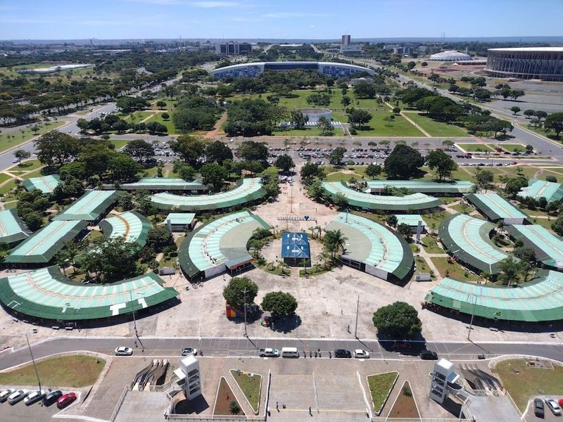
Feira da Torre de TV
Nestled at the base of the TV Tower, the Feira da Torre de TV is a hub of creativity and culture that showcases the of Brazilian craftsmanship. This expansive market features an array of handmade goods, from intricate jewelry to stylish clothing and unique home decor. As you stroll through its neatly arranged stalls, also encounter tempting food stands offering mouthwatering traditional Brazilian dishes.
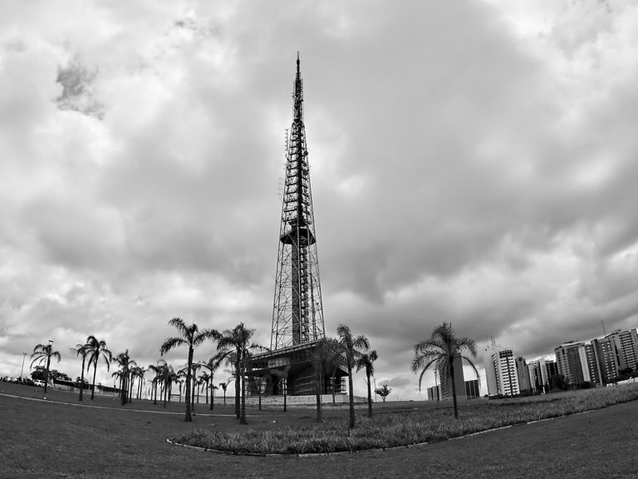
Torre de TV de Brasília
Torre de TV de Brasília is listed among principal sites for Brasília within Brazil. Municipal and regional heritage listings document its place in the historic centre and travellers routes through Brasília. Torre de TV de Brasília is listed among principal sites for Brasília within Brazil.
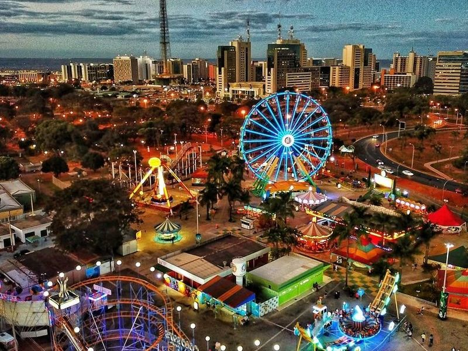
Parque Urbano Nicolândia
Nicolândia Parque Urbano is a amusement park located within the Sarah Kubitschek City Park in Brasilia. It offers a variety of thrilling rides including roller coasters, carousels, and the Ferris Wheel of Brasilia, providing panoramic views of the city. The park ensures safety and care for visitors using their new machines and offers affordable passes through coupons. Visitors of all ages can enjoy the attractions, making it an ideal destination for families with children.
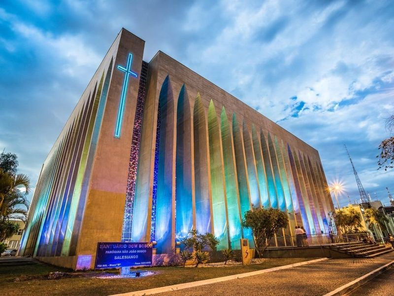
Santuário São João Bosco
Santuário São João Bosco is a unique church dedicated to the 19th-century Italian priest, with an interior defined by striking blue Murano glass windows and a grand chandelier. The building, located on the 15th parallel, was designed by architect Vasconcelos Naves and features tall pointed arches framing stained glass windows in various shades of blue.
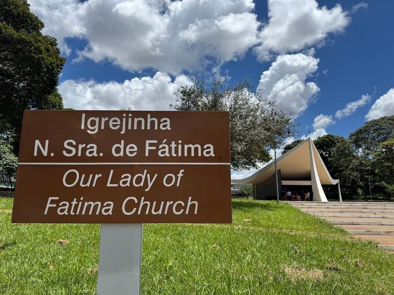
Igrejinha Nossa Senhora de Fátima
Our Lady of Fatima Church is a modern Catholic church in Brasilia, consecrated in 1958. It features a charming triangular roof covered with unique ceramic tiles designed by Athos Bulcao. Situated in a peaceful residential park surrounded by large trees, the church offers a serene atmosphere for prayer and reflection. As the first church built in Brasilia, it holds historical significance and is a favorite among locals and visitors alike.
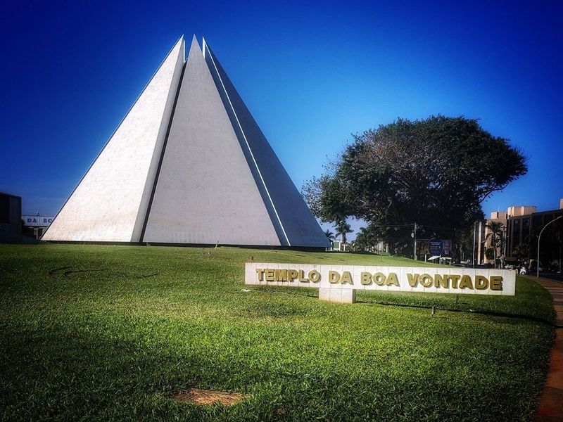
Temple of Good Will
The Temple of Good Will, also known as Templo da Boa Vontade, is a modern religious complex in Brasilia. It is considered one of the city's 7 wonders and attracts visitors interested in art, culture, and religious tourism. The temple features diverse environments representing various religions and philosophies, showcasing art pieces such as paintings, sculptures, and cultural objects promoting peace and reflection on life.
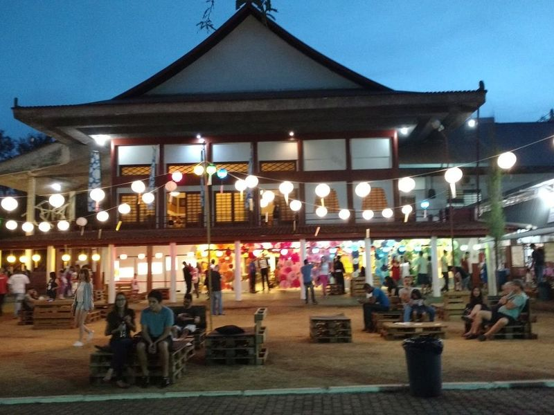
Temple Shin Buddhist Pure Land - Brasilia
Temple Shin Buddhist Pure Land in Brasilia is a serene and welcoming Zen Buddhist temple that has been open to everyone since its inauguration in 1973. The annual festival at the temple features Japanese food, dance, and other cultural activities. Visitors can enjoy a peaceful atmosphere and participate in various activities such as kung fu, judo, tai chi, and meditation. The temple also offers a massage clinic for those seeking relaxation.
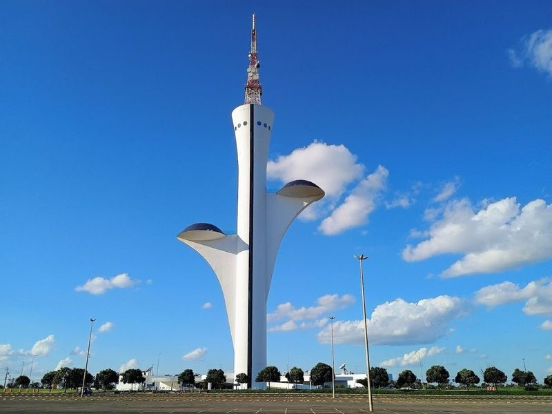
Torre de TV Digital de Brasília
The Torre de TV Digital, also known as the Digital TV Tower, is a striking telecommunications tower in Brasilia, Brazil. Designed by renowned architect Lucio Costa and completed in 2012, it stands at an impressive height of 180 meters. Visitors can enjoy panoramic views of the city from its observation platforms. The tower's futuristic design offers a unique backdrop for inspired photoshoots and provides an opportunity to appreciate the architectural planning of Brasilia.
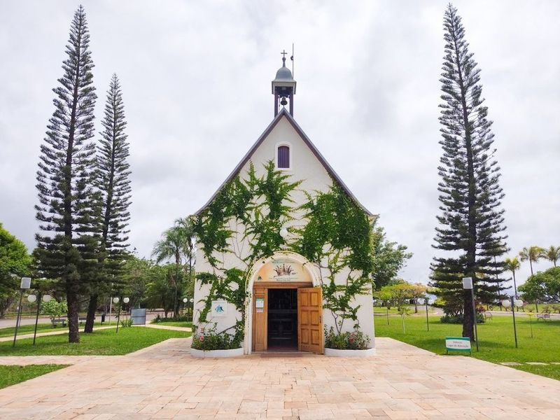
Santuário da Mãe e Rainha Três Vezes Admirável de Schoenstatt
Santuário da Mãe e Rainha Três Vezes Admirável de Schoenstatt is a beautiful Catholic church located near the Digital TV Tower, offering splendid views and a peaceful atmosphere. The parklike surroundings provide a serene setting for contemplation and prayer, with regular masses held on-site. Visitors can also explore the well-maintained gardens and shop for religious souvenirs. The sanctuary offers a tranquil escape in the Brazilian cerrado, with clean and organized facilities.
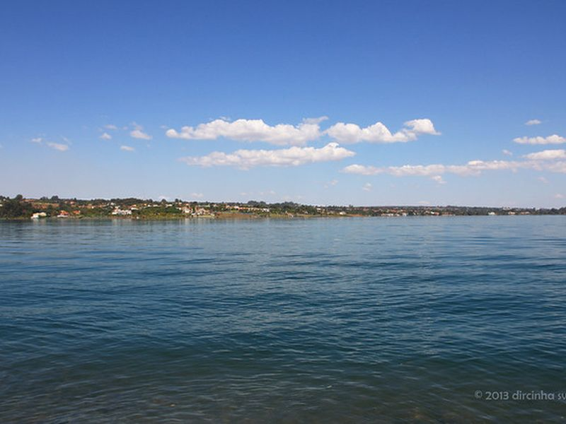
Prainha North Lake
Prainha North Lake is listed among principal sites for Brasília within Brazil. Municipal and regional heritage listings document its place in the historic centre and travellers routes through Brasília. Prainha North Lake is listed among principal sites for Brasília within Brazil.
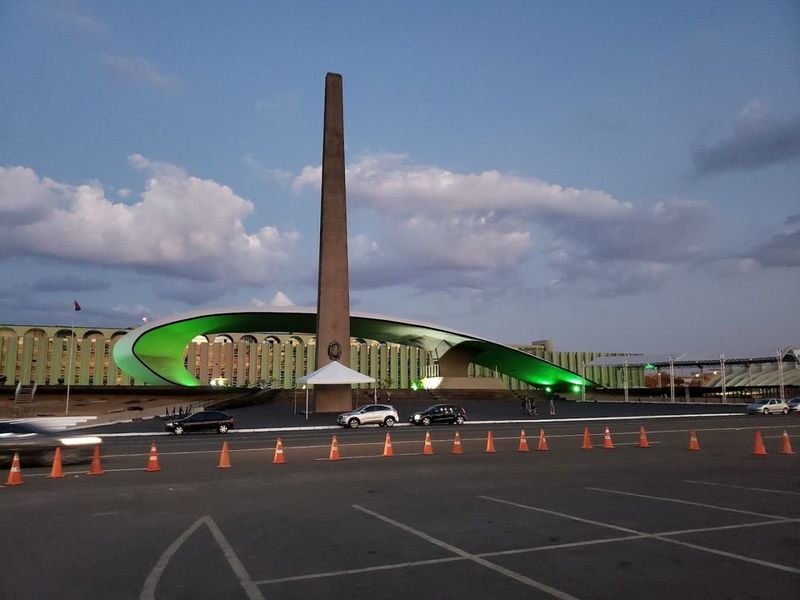
Praça dos Cristais
Praça dos Cristais is a 32-acre triangular plaza in Brasilia, designed by artist Roberto Burle Marx and his assistant Haruyoshi Ono. It was inaugurated in 1970 and is also known as Praca Civica. Located in the Setor Militar Urbano, it features sculptures, reflecting pools, pathways, and ample space for picnics and leisure activities.
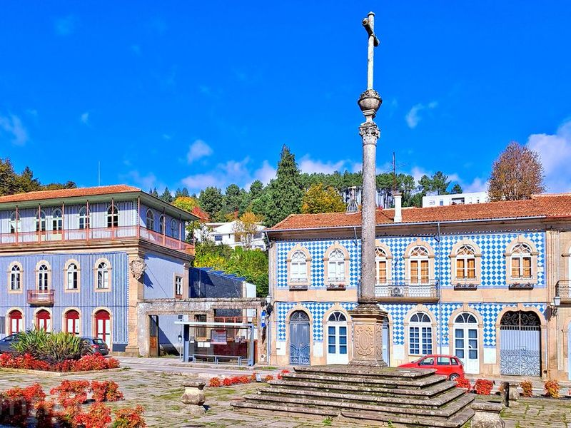
Praça do Cruzeiro
Praça do Cruzeiro is listed among principal sites for Brasília within Brazil. Municipal and regional heritage listings document its place in the historic centre and travellers routes through Brasília. Praça do Cruzeiro is listed among principal sites for Brasília within Brazil.
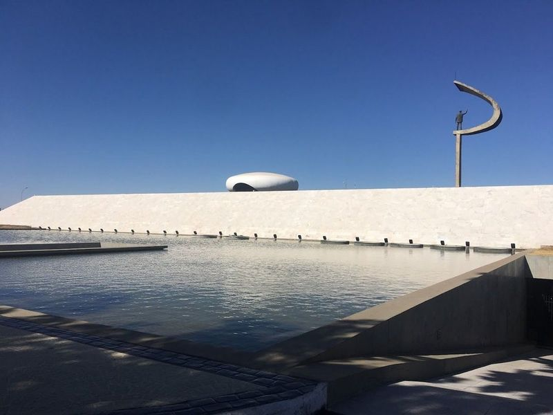
Memorial JK
Memorial JK is a museum in Brasilia designed by Oscar Niemeyer, dedicated to the former Brazilian president Juscelino Kubitschek. The memorial was inaugurated in 1981 and features a 28-meter statue of Juscelino, along with exhibits showcasing his life and legacy. Visitors can explore the Mortuary Chamber, where Juscelino's remains are housed, as well as personal objects and presidential memorabilia.